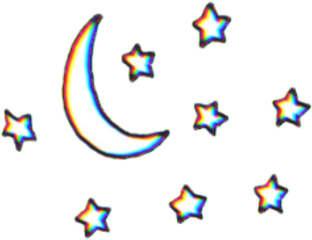
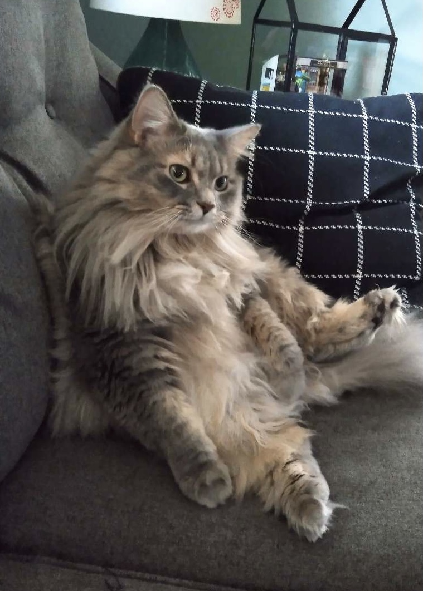
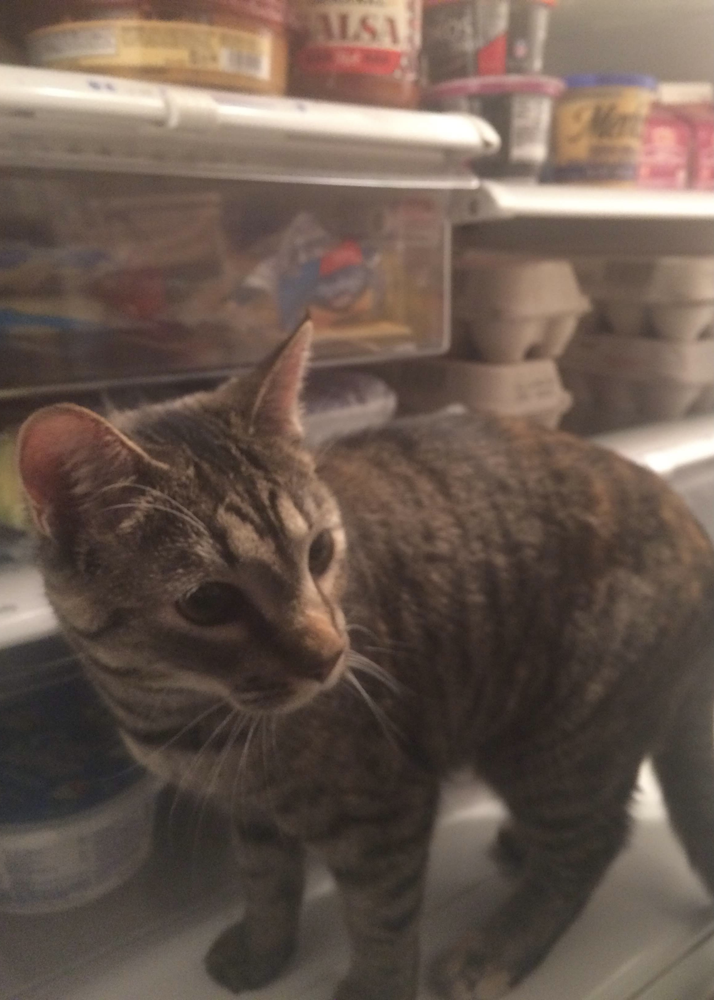
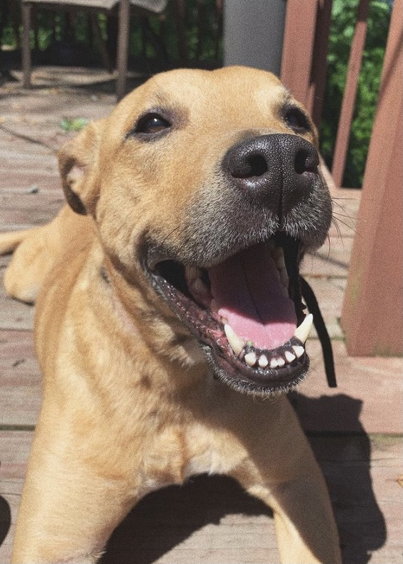
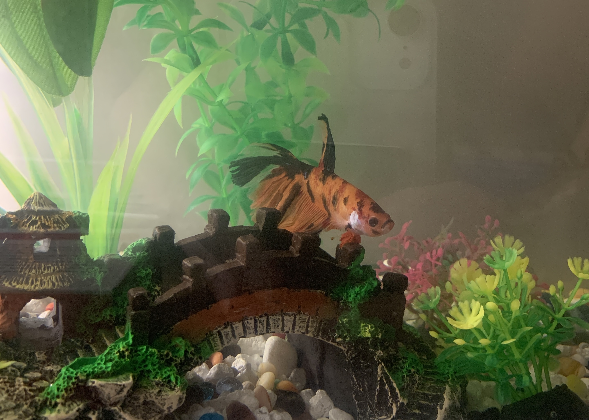

my pets

Fat Tina
This is Fat Tina. Her full name is Valentina after the first woman to go to space, but we call her Fat Tina because she is a chunky girl. She loves to eat, and chicken is her favorite thing in the world. She is convinced that every bird outside is a chicken and she is determined to catch all of them and gobble them down. She loves to sleep after she's done eating, and then she wakes up and eats again. She likes to play but often gets too tired and ends up eating and falling asleep at her food bowl.
Sputnik
This is Sputnik, named after the first artifical earth satellite, launched by the Soviet Union. As you can see we follow a space naming theme for our cats. Sputnik is probably secretly a Russian spy, and she's ready to assassinate at any moment. She's sassy and fierce and is always on the hunt ready to strike her next victim. While she is a spy, I don't think she spies on us because she is nice to us. She loves to cuddle up to any blanket and sleep behind our shoulders on the back of the couch. But most of the day she spends on her secret missions that she tells no one about.
Lucy
This is Lucy. She is a dumb girl. She has no brain ever. She's so dumb that she's smart. When you tell her to sit, she doesn't know that she doesn't have to so she sits. She's goofy and obedient, and always has her tongue sticking out due to her underbite. Her bark sounds more like a screetch and she never growls. She loves tennis balls more than any toy in the world, and she loves to play fetch and is really good at actually retrieving the ball. If you let her have the ball for too long, however, she'll chew it up into little bits and pieces.
Luna

This is Luna. She is a hedgehog. She's kind of a little old lady. She doesn't really like people all too much. She loves to sleep under her big fleece blanket and crunch on her food really loudly at night. She also likes to watch the cats jump on top of her cage. Her favorite food is mealworms, and we give them to her as a treat.
Bath
This is bath. He's the only one of my pets who lives with me in Chicago. He was unnamed for a while until my roommate mumbled something about him, and I misheard and thought she called him Bath. That's where his beautiful name was created. He's got so much personality for a simple fish. He loves to sit in his castle and under his bridge, and he knows exactly when it is dinner time and swims out just to eat. He loves to do weird tricks like backflips and twists. He's got one funky eye that is somewhat black, which kind of reminds me of a pirate.